컴퓨터응용선반기능사 (2014-01-26 기출문제)
1과목: 기계재료 및 요소
1. 금속재료를 고온에서 오랜 시간 외력을 걸어놓으면 시간의 경과에 따라 서서히 그 변형이 증가하는 현상은?
- 크리프
- 스트레스
- 스트레인
- 템퍼링
(정답률: 64%)

2. 황동의 연신율이 가장 클 때 아연(Zn)의 함유량은 몇% 정도인가?
- 30
- 40
- 50
- 60
(정답률: 65%)
3. 공구용 합금강을 담금질 및 뜨임처리하여 개선되는 재질의 특성이 아닌 것은?
- 조직의 균질화
- 경도 조절
- 가공성 향상
- 취성 증가
(정답률: 76%)
4. 주철의 장점이 아닌 것은?
- 압축 강도가 작다
- 절삭 가공이 쉽다
- 주조성이 우수하다
- 마찰 저항이 우수하다
(정답률: 68%)
5. 구상 흑연주철을 조직에 따라 분류했을 때 이에 해당하지 않는 것은?
- 마르텐자이트형
- 페라이트형
- 펄라이트형
- 시멘타이트형
(정답률: 51%)
6. 절삭공구류에서 초경합금의 특성이 아닌 것은?
- 경도가 높다
- 마모성이 좋다
- 압축강도가 높다
- 고온 경도가 양호하다
(정답률: 58%)
7. 합금의 종류 중 고용융점 합금에 해당하는 것은?
- 티탄 합금
- 텅스텐 합금
- 마그네슘 합금
- 알루미늄 합금
(정답률: 73%)
8. 지름이 50mm 축에 록이 10mm인 성크 키를 설치 했을 때, 일반적으로 전단하중만을 받을 경우 키가 파손되지 않으려면 키의 길이는 몇 mm인가?
- 25mm
- 75mm
- 150mm
- 200mm
(정답률: 54%)
9. 롤링 베어링의 내륜이 고정되는 곳은?
- 저널
- 하우징
- 궤도면
- 리테이너
(정답률: 52%)
10. 모듈 5, 잇수가 40인 표준 평기어의 이끝원 지름은 몇 mm인가?
- 200mm
- 210mm
- 220mm
- 240mm
(정답률: 48%)
11. 두 축이 평행하고 거리가 아주 가까울 때 각 속도의 변동없이 토크를 전달할 경우 사용되는 커플링은?
- 고정 커플링(fixed coupling)
- 플랙시블 커플링(flexible coupling)
- 올덤 커플링(Oldham's coupling)
- 유니버설 커플링(universal coupling)
(정답률: 57%)
12. 기계재료의 단단한 정도를 측정하는 가장 적합한 시험법은?
- 경도시험
- 수축시험
- 파괴시험
- 굽힘시험
(정답률: 82%)
13. 인장응력을 구하는 식으로 옳은 것은? (단, A는 단면적, W는 인장하중이다.)
- A×W
- A+W
- A/W
- W/A
(정답률: 72%)
14. 다음 중 구름 베어링의 특성이 아닌 것은?
- 감쇠력이 작아 충격 흡수력이 작다.
- 축심의 변동이 작다.
- 표준형 양산품으로 호환성이 높다.
- 일반적으로 소음이 작다.
(정답률: 58%)
15. 자동차의 스티어링 장치, 수치제어 공작기계의 공구대, 이송장치 등에 사용되는 나사는?
- 둥근나사
- 볼나사
- 유니파이나사
- 미터나사
(정답률: 59%)
2과목: 기계제도(절삭부분)
16. 그림과 같은 제 3각 정투상도에 가장 적합한 입체도는?
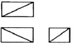
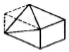
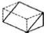
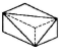
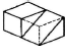
(정답률: 86%)
17. 원통이나 축 등의 투상도에서 대각선을 그어서 그 면이 평면임을 나타낼 때에 사용되는 선은?
- 굵은 실선
- 가는 파선
- 가는 실선
- 굵은 1점 쇄선
(정답률: 62%)
18. 스프로킷 휠의 도시방법에 관한 내용으로 옳은 것은?
- 바깥지름은 굵은 실선으로 그린다.
- 이뿌리원은 가는 1점 쇄선으로 그린다.
- 피치원은 가는 파선으로 그린다.
- 요목표는 작성하지 않는다.
(정답률: 57%)
19. 다음 도면에 대한 설명으로 잘못된 것은?(오류 신고가 접수된 문제입니다. 반드시 정답과 해설을 확인하시기 바랍니다.)
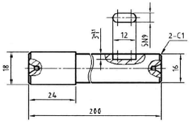
- 긴 축은 중간을 파단하여 짧게 그렸고, 치수는 실제치수를 기입하였다.
- 평행키 홈의 깊이 부분을 회전도시 단면도로 나타 내었다.
- 평행키 홈의 폭 부분을 국부투상도로 나타내었다.
- 축의 양 끝을 1×45°로 모떼기 하도록 지시하였다.
(정답률: 57%)
20. 다음 중 나사의 표시를 옳게 나타낸 것은?
- 왼 M25×2 - 2줄
- 왼 M25– 2– 2 - 6줄
- 2줄 왼 M25×2 - 2A
- 왼 2줄 M25×2 – 6H
(정답률: 53%)
21. 부품의 기능과 역할에 따라 틈새 또는 죔새가 생기는 끼워 맞춤은?
- 헐거운 끼워 맞춤
- 억지 끼워 맞춤
- 표준 끼워 맞춤
- 중간 끼워 맞춤
(정답률: 57%)
22. 표면의 결 도시기호에서 가공에 의한 컷의 줄무늬가 여러 방향으로 교차 또는 무방향으로 도시된 기호는?
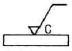
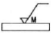
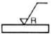
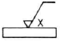
(정답률: 70%)
23. 도면에서 치수 숫자와 함께 사용되는 기호를 올바르게 연결한 것은?
- 지름 : D
- 정 사각형의 변 : □
- 반지름 : R
- 45° 모따기 : 45°
(정답률: 58%)
24. 도면에서 어떤 경우에 해칭(hatching)하는가?
- 가상 부분을 표시할 경우
- 절단 단면을 표시할 경우
- 회전 부분을 표시할 경우
- 부품이 겹치는 부분을 표시할 경우
(정답률: 75%)
25. 최대 실체 공차 방식의 적용을 올바르게 나타낸 것은?(일부 컴퓨터에서 원문자 특수 기호가 보이지 않아서 괄호뒤에 다시 표기 하여 둡니다.)
- 공차 붙이 형체에 적용하는 경우 공차 값 뒤에 기호 Ⓜ(M)을 기입한다.
- 공차 붙이 형체에 적용하는 경우 공차 값 앞에 기호 Ⓜ(M)을 기입한다.
- 공차 붙이 형체에 적용하는 경우 공차 값 뒤에 기호 Ⓢ(S)을 기입한다.
- 공차 붙이 형체에 적용하는 경우 공차 값 앞에 기호 Ⓢ(S)을 기입한다.
(정답률: 50%)
26. 연삭숫돌의 자생 작용이 일어나는 순서로 올바른것은?
- 입자의 마멸 → 생성 → 파쇄 → 탈락
- 입자의 탈락 → 마멸 → 파쇄 → 생성
- 입자의 파쇄 → 마멸 → 생성 → 탈락
- 입자의 마멸 → 파쇄 → 탈락 → 생성
(정답률: 58%)
27. 수평 밀링 머신에서 슬로팅 장치는 어디에 설치 하는가?
- 헤드
- 분할대
- 새들 위
- 테이블 위
(정답률: 40%)
28. 버니어 캘리퍼스의 측정 시 주의사항 중 잘못된 것은?
- M형 버니어 캘리퍼스로 특히 작은 구멍의 안지름을 측정할 때는 실제 치수보다 작게 측정됨을 유의 해야한다.
- 사용하기 전 각 부분을 깨끗이 닦아서 먼지, 기름 등을 제거한다.
- 측정 시 공작물을 가능한 힘 있게 밀어붙여 측정한다.
- 눈금을 읽을 때는 시차를 없애기 위해 눈금면의 직각 방향에서 읽는다.
(정답률: 69%)
29. 다음 중 내면 연삭기 형식의 종류에 속하지 않는 것은?
- 보통형
- 유성형
- 센터리스형
- 플랜지 컷형
(정답률: 44%)
30. 가늘고 긴 일감은 절삭력과 자중으로 휘거나 처짐이 일어나 정확한 치수로 깎기 어렵다. 이것을 방지하는 선반의 부속장치는 무엇인가?
- 센터
- 방진구
- 맨드릴
- 면판
(정답률: 77%)
3과목: 기계공작법
31. 다음 중 절삭유제의 작용이 아닌 것은?
- 마찰을 줄여준다.
- 절삭성능을 높여준다.
- 공구 수명을 연장시킨다.
- 절삭열을 상승시킨다.
(정답률: 80%)
32. 드릴에서 절삭 날의 웹(web)이 커지면 드릴작업에 어떤 영향이 발생하는가?
- 공작물에 파고 들어갈 염려가 있다.
- 전진하지 못하게 하는 힘이 증가한다.
- 절삭성능은 증가하나 드릴 수명이 줄어든다.
- 절삭 저항을 감소시킨다.
(정답률: 51%)
33. 다음 중 소품종 대량생산에 가장 적합한 공작기계는?
- 만능 공작기계
- 범용 공작기계
- 전용 공작기계
- 표준 공작기계
(정답률: 66%)
34. 절삭속도 126m/min, 밀링커터의 날 수 8개, 지름 100mm, 1날 당 이송을 0.⑤mm라 하면 테이블의 이송 속도는 몇 mm/min인가?
- 180.4
- 160.4
- 129.1
- 80.4
(정답률: 56%)
35. 절삭공구가 갖추어야 할 조건으로 틀린 것은?
- 고온경도를 가지고 있어야 한다.
- 내마멸성이 커야 한다.
- 충격에 잘 견디어야 한다.
- 공구보호를 위해 인성이 적어야 한다.
(정답률: 68%)
36. 다음 중 선반의 주요 부분이 아닌 것은?
- 컬럼
- 왕복대
- 심압대
- 주축대
(정답률: 81%)
37. 만능 밀링에서 127개의 이를 가진 기어를 절삭하려고 할 때 가장 적당한 분할방식은?
- 차동 분할법
- 직접 분할법
- 단식 분할법
- 복식 분할법
(정답률: 41%)
38. 입도가 작고, 연한 숫돌을 작은 압력으로 가공물의 표면에 가압하면서 가공물에 이송을 주고, 동시에 숫돌에 진동을 주어 표면 거칠기를 높이는 가공 방법은?
- 슈퍼 피니싱
- 호닝
- 래핑
- 배럴 가공
(정답률: 60%)
39. 탭 작업 시 탭의 파손 원인으로 가장 적절한 것은?
- 구멍이 너무 큰 경우
- 탭이 경사지게 들어간 경우
- 탭의 지름에 적합한 핸들을 사용한 경우
- 구멍이 일직선인 경우
(정답률: 75%)
40. 연성재료를 절삭할 때 유동형 칩이 발생하는 조건으로 가장 알맞은 것은?
- 절삭 깊이가 적으며 절삭속도가 빠를 때
- 저속 절삭으로 절삭 깊이가 클 때
- 점성이 큰 가공물을 경사각이 적은 공구로 가공할 때
- 주철과 같이 메진 재료를 저속으로 절삭할 때
(정답률: 61%)
4과목: CNC공작법 및 안전관리
41. 머시닝센터에서 ø12mm 엔드밀로 가공하려 할 때 절삭속도가 32m/min 이면 공구의 분당 회전수는 약 몇 rpm 이어야 하는가?
- 750 rpm
- 약 800 rpm
- 약 850 rpm
- 약 900 rpm
(정답률: 60%)
42. 기포의 위치에 의하여 수평면에서 기울기를 측정하는데 사용하는 액체식 각도 측정기는?
- 사인바
- 수준기
- NPL식 각도기
- 콤비네이션 세트
(정답률: 56%)
43. 다음 중 CNC 프로그램에서 주축의 회전수를 350 rpm 으로 직접 지정하는 블록은?
- G50 S350 ;
- G96 S350 ;
- G97 S350 ;
- G99 S350 ;
(정답률: 48%)
44. 조작판의 급속 오버라이드 스위치가 그림과 같이 급속위치 결정(G00) 동작을 실행할 경우 실제 이송속도는 얼마인가? (단, 기계의 급속 이송 속도는 1000mm/min이다.)
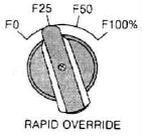
- 100mm/min
- 150mm/min
- 200mm/min
- 250mm/min
(정답률: 66%)
45. 다음 중 나사가공 프로그램에 관한 설명으로 가장 적절하지 않은 것은?
- 주축의 회전은 G97로 지령한다.
- 이송속도는 나사의 피치 값으로 지령한다.
- 나사의 절입 회수는 절입표를 참조하여 여러 번 나누어 가공한다.
- 복합. 고정형 나사 절삭 사이클은 G76 이다.
(정답률: 41%)
46. ∅30 드릴 가공에서 절삭속도가 150m/min, 이송이 0.08mm/rev일 때, 회전수와 이송 속도(feed rate)는?
- 150rpm, 0.08mm/min
- 300rpm, 0.16mm/min
- 1592rpm, 127.4mm/min
- 3184rpm, 63.7mm/min
(정답률: 59%)
47. 다음 중 지령된 블록에서만 유효한 G 코드 (One shot G code)가 아닌 것은?
- G04
- G30
- G40
- G50
(정답률: 34%)
48. CNC 기계의 움직임을 전기식 신호로 변환하여 속도제어와 위치 검출을 하는 일종의 피드백 장치는?
- 엔코더(encoder)
- 컨트롤러(controller)
- 서보모터(servo motor)
- 볼 스크루(ball screw)
(정답률: 57%)
49. 다음 프로그램에서 P_ 가 의미하는 것은?
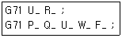
- X축 방향의 도피향
- 고정 사이클 시작 번호
- X축 방향의 1회 절입량
- 고정 사이클 끝 번호
(정답률: 54%)
50. 다음 중 CNC선반 작업에서 전원 투입 전에 확인 해야하는 사항과 가장 거리가 먼 것은?
- 전장(NC)박스 및 외관 상태를 점검한다.
- 공기 압력이 적당한지 점검한다.
- 윤활유의 급유 탱크를 점검한다.
- X축, Z축의 백래시(Back lash)를 점검한다.
(정답률: 57%)
51. 다음 중 밀링 가공의 작업 안전에 관한 설명으로 틀린 것은?
- 절삭 중 작업화를 착용한다.
- 절삭 중 보안경을 착용한다.
- 절삭 중 장갑을 착용하지 않는다.
- 칩(chip) 제거는 절삭 중 브러쉬를 사용한다.
(정답률: 77%)
52. 다음은 머시닝 센터에서 ∅10mm 엔드밀로 ∅50mm인 내경을 윤곽 가공하는 프로그램이다. 절삭 속도는 약 몇 m/min인가?
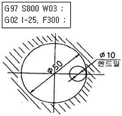
- 12.6
- 25.1
- 125.7
- 251
(정답률: 51%)
53. 다음 중 CNC 선반에서 원호가공을 하는데 적합하지 않은 WORD는?(오류 신고가 접수된 문제입니다. 반드시 정답과 해설을 확인하시기 바랍니다.)
- R-8.
- I-3. K-5.
- G02
- R8.
(정답률: 47%)
54. 다음 중 CNC 공작기계에서 사용되는 좌표치의 기준으로 사용하지 않는 좌표계는?
- 고정 좌표계
- 기계 좌표계
- 공작물 좌표계
- 구역 좌표계
(정답률: 35%)
55. 다음 중 CNC 선반 프로그램과 공구보정 화면을 보고, 3번 공구의 날 끝(인선) 반경 보정 값으로 옳은 것은?
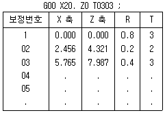
- 0.2mm
- 0.4mm
- 0.8mm
- 3.0mm
(정답률: 67%)
56. 다음 중 CAD/CAM 시스템에서 입․출력장치에 해당되지 않는 것은?
- 메모리
- 프린터
- 키보드
- 모니터
(정답률: 70%)
57. NC 기계 작업 중 안전사항으로 틀린 것은?
- NC 기계 주변을 정리정돈한 후 작업을 하였다.
- 작업 도중 정전이 되어 전원스위치를 내렸다.
- 작업시간과 작업량을 높이기 위하여 작업 중 안전장치를 제거하였다.
- 작업 공구와 측정기기는 따로 구분하여 정리하였다.
(정답률: 81%)
58. 다음 중 머시닝센터 프로그램에서 공구 지름 보정에 관한 설명으로 옳은 것은?
- 일반적으로 공구의 지름만큼 보정한다.
- 공구의 진행방향을 기준으로 오른쪽 보정은 G40을 사용한다.
- 공구를 교환하기 전에 공구 지름 보정을 취소해야 한다.
- 공구 지름 보정 취소에는 G49를 사용한다.
(정답률: 47%)
59. 다음 보조 기능 중 “M02"를 대신하여 쓸 수 있는 것은?
- M00
- M⑤
- M09
- M30
(정답률: 53%)
60. 다음 중 머시닝센터에서 공구의 길이 차를 측정하는데 가장 적합한 것은?
- R 게이지
- 사인 바
- 한계 게이지
- 하이트 프레세터
(정답률: 49%)